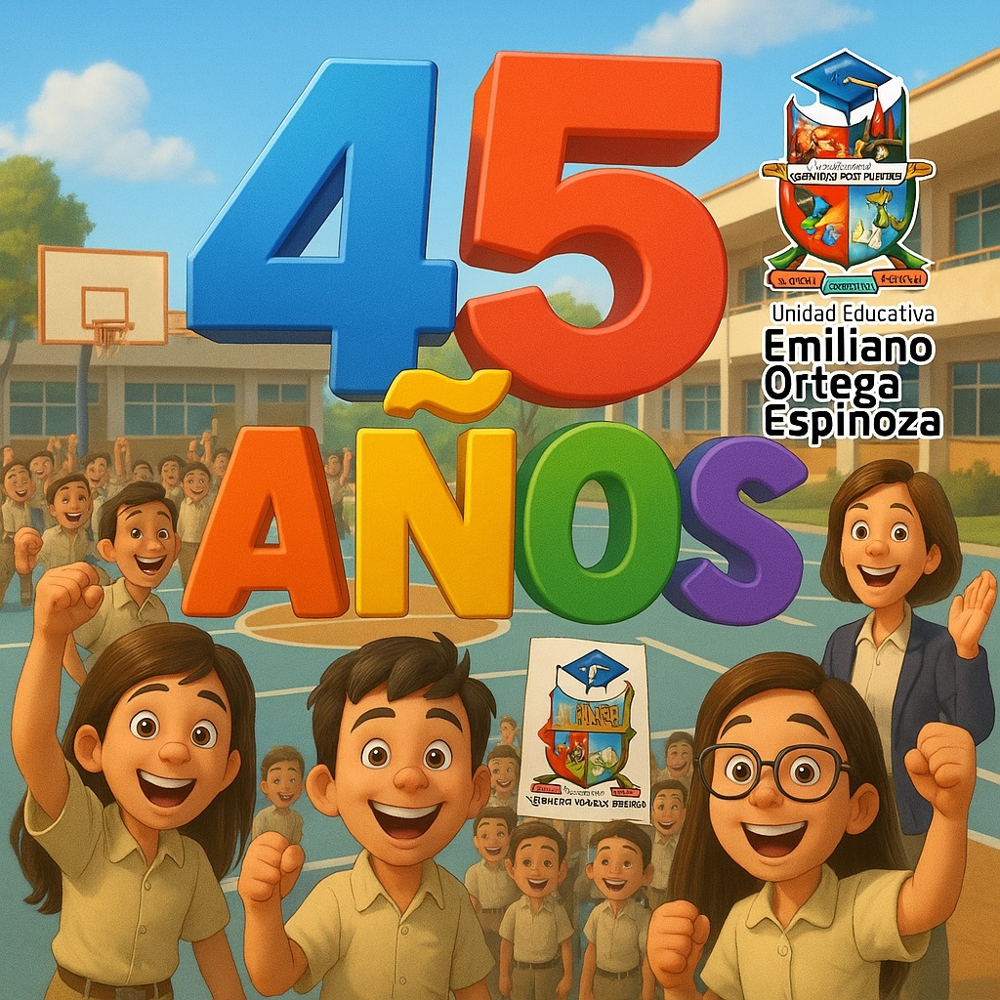

El Colegio “Emiliano Ortega Espinoza” tiene su origen gracias a la iniciativa de un distinguido grupo de personas amantes del progreso y desarrollo social del pueblo de Catamayo, que, conscientes de la necesidad de disponer de un centro de educación media mixto y diurno —ya que, durante el día, solo se educaban señoritas en el colegio fiscomisional y por la noche los varones en el colegio nocturno Catamayo—, promueven la creación de un colegio que cubra esta necesidad educativa en horarios matutinos.
Entre las personas que se destacaron por su dinamismo en esta loable tarea, cabe anotar, entre otras, a: Sr. Prof. Nolberto Torres, Rvdo. Padre Eliseo Arias Carrión (Párroco de Catamayo), Sr. Vicente Lapo, Sra. Teresa Arias y Sr. Ramón Ojeda.
Como resultado de las gestiones realizadas, el Ministerio de Educación y Cultura, mediante decreto Nro. 018869 de septiembre de 1980, procede a la creación del Colegio de Ciclo Básico Mixto Vespertino de Catamayo, para el año lectivo 1980–1981, con una asignación presupuestaria de 510.000 sucres. El decreto se firmó bajo la presidencia del Abg. Jaime Roldós Aguilera.
El 18 de octubre de 1980 se inaugura oficialmente el colegio, en las instalaciones de la escuela Eliseo Arias Carrión, con la presencia del Sr. Director Nacional de Educación, Lic. Nelson Peñaherrera Álvarez, el Director Provincial de Educación, y el Sr. Lic. Dennis Sinche Fernández como Rector encargado. Durante su intervención, el Lic. Peñaherrera resaltó el esfuerzo de la comunidad de Catamayo, especialmente de los padres de familia, en lograr la creación del plantel.
Mediante Acuerdo Ministerial Nro. 1047 del 7 de junio de 1983 se oficializa el nombre del "Colegio Emiliano Ortega Espinoza".
El 3 de junio de 1986, con resolución Nro. 2357, se autoriza la especialidad de Secretariado. En 1987, mediante resolución Nro. 831, se aprueba la especialidad de Químico-Biológicas; en 1989, con resolución Nro. 629, la especialidad de Físico-Matemáticas.
Posteriormente, la Subsecretaría del Austro autoriza el funcionamiento del Bachillerato Técnico en Comercio y Administración, especialidad Informática (Resolución 2072 del 19 de abril de 1997), y más tarde la especialidad de Administración de Sistemas (Acuerdo Nro. 093 del 17 de agosto de 2001).
En la actualidad, la institución ofrece las especialidades de Bachillerato en Ciencias Básicas e Informática, cumpliendo con lo establecido por decreto ejecutivo, y continúa siendo un pilar educativo de la comunidad catamayense.